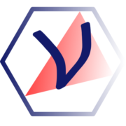
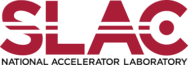
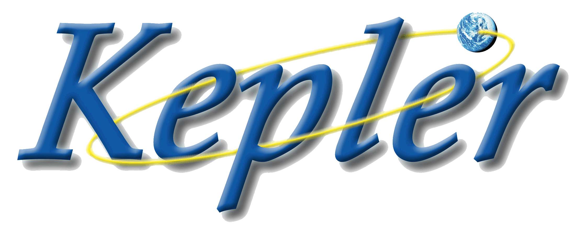

Resume, Curriculum Vitae, etc.
Research Experience
Pacific Northwest National Lab --
Summer 2024 - Fall 2026
Pacific Northwest National Lab
Richland, Washington
Manager: Bryan Fulsom
- Developed and analyzed Geant4 and CORSIKA Monte Carlo simulations for experimental physics and national-security research projects.
- Conducted detector research in dilution-refrigerator and clean-laboratory environments supporting the SuperCDMS and BeEST experiments.
- Applied computational modeling, detector analysis, and experimental techniques to characterize and support particle-physics research.
- Performed national-security research under Department of Energy Q clearance.
High Energy Neutrino Research --
Summer 2022 - Fall 2023

Trinity Demonstrator Telescope
Georgia Institute of Technology, School of Physics
PI: Otte Nepomuk
- Led development, integration, and testing of the Trinity Demonstrator telescope across electronics, optics, data acquisition (DAQ), cooling, and camera systems.
- Designed and implemented remote-observation procedures, software, and hardware to enable remote operation of the Trinity Demonstrator.
- Built, integrated, and tested telescope subsystems from individual components through system-level operation, troubleshooting hardware and software issues during development and testing.
- Designed and tested the cooling system for the EUSO-SPB2 Cherenkov telescope, integrating thermal-control requirements with detector and optical systems.
- Developed and ran CORSIKA, GrOptics, and C++ simulations to characterize the performance of the Trinity Observatory and Demonstrator telescope.
- Managed and provided technical direction to a team of approximately five graduate and undergraduate researchers, assigning research tasks, coordinating priorities, reviewing results, and troubleshooting technical issues.
- Mentored graduate and undergraduate researchers in experimental design, electronics, optics, DAQ, software development, simulation, data analysis, and scientific communication.
- Coordinated hardware development, software, simulation, and experimental activities across multiple research projects to meet project milestones.
Ultra High Energy Cosmic Ray Research --
Fall 2015 - Fall 2024

Telescope Array Cosmic Ray Observatory
University of Utah, Department of Physics and Astronomy
Research Advisor: Charles Jui
Thesis: Ultra High Energy Cosmic Ray Energy Spectrum using Hybrid Analysis with TAx4
Thesis Defense Slides: pptx, pdf
- Analyzed two years of TAx4 hybrid-detection data to calculate the ultra-high-energy cosmic-ray energy spectrum from above 1 EeV through the Greisen-Zatsepin-Kuzmin (GZK) cutoff.
- Maintained and operated surface and fluorescence detectors used for cosmic-ray data collection.
- Administered the Telescope Array Linux data server and computational cluster, supporting scientific computing and data-analysis workflows.
- Developed Monte Carlo simulations to characterize fluorescence-detector energy sensitivity and cosmic-ray interactions in the atmosphere.
- Processed reconstructed detector data using histogram-based analysis and CERN ROOT fitting workflows.
Accelerator Research --
Fall 2015 - Fall 2022

sFLASH Collaboration
Stanford Linear Accelerator Center, National Accelerator Laboratory
Proceedings/Publications: Instruments of sFLASH
- Performed two experiments in 2016 and 2018 aimed at measuring the air fluorescence yield at Stanford Linear Accelerator Center.
- Performed photomultiplier tube calibration with a UV LED diode.
- Assisted in taking data when the beam was running and kept an experimental log of each data run.
- Analyzed beam run data to find golden runs where the beam energy was stable.
Astronomy Research --
Fall 2014 - Spring 2015

Salt Lake Community College, Salt Lake City, Utah
Research Advisor: Jonathan Barnes
Senior Project: A Closer Look at the KOI-22 Light Curve
- Examined Kepler exoplanet data for evidence of precession in the light curves of Hot Jupiter systems that could hint at additional exoplanets.
- Found a trend in the difference of the orbital times of KOI-22 that repeated every sixty-two orbits, which may suggest a perturbing body.
Publications
- M.F. Albakry et al. (SuperCDMS Collaboration). Calibration and Performance of Germanium High Voltage Detectors for SuperCDMS SNOLAB. 2026.
- A. Armatol et al. (TESSERACT Collaboration). Low Energy Phonon Bursts Created By Fast Neutron Damage. 2026.
- M. Bagheri et al. (Trinity Collaboration). The Camera and Readout for the Trinity Demonstrator and the EUSO-SPB2 Cherenkov Telescope. Nuclear Instruments and Methods in Physics Research, 2024.
- M. Potts. Ultra-High Energy Cosmic Ray Energy Spectrum Using Hybrid Analysis with TAx4. Dissertation, 2022.
- R.U. Abbasi et al. (TA Collaboration). Indications of a Cosmic Ray Source in the Perseus-Pices Supercluster. 2021.
- M. Potts and C. Jui (TA Collaboration). Monocular Energy Spectrum using the TAx4 Fluorescence Detector. Proceedings of Science (ICRC2021), 343.
- R.U. Abbasi et al. (TA Collaboration). Surface detectors of the TAx4 experiment. Nuclear Instruments and Methods in Physics Research, 2021.
- S. Atwood et al. (sFLASH Collaboration). The Instruments of sFLASH experiment. Proceedings of Science (ICRC2017), 407.
Conferences/Talks
- M. Potts. Simulation of BeEST Photopeak Calibration. American Physical Society Meeting, 2026.
- M. Potts. The SuperCDMS Experiment at SNOLAB. American Physical Society Meeting, 2026.
- M. Potts. Searching for Dark Matter using SuperCDMS at SNOLAB. PoGo Symposium, 2024.
- M. Potts. Progress on Trinity, an IACT Searching for UHE Neutrinos. American Physical Society April Meeting, 2023.
- M. Potts. Trinity: UHE Earth-Skimming Neutrino Detector. P5 Town Hall at Fermilab and Argonne, 2023.
- M. Potts. Ultra-High Energy Cosmic Ray Energy Spectrum Using Hybrid Analysis with TAx4. American Physical Society April Meeting, 2022.
- M. Potts. Ultra-High Energy Spectrum Using Hybrid Analysis with TAx4. Los Alamos National Laboratory / Stanford Linear Accelerator Center, 2021.
- M. Potts. Ultra-High Energy Spectrum Using Hybrid Analysis with TAx4. Georgia Institute of Technology, 2021.
- M. Potts, on behalf of TA. Monocular Energy Spectrum Using the TAx4 Fluorescence Detector. ICRC, 2021.
- M. Potts, on behalf of TA. TAx4 Cosmic Ray Energy Spectrum. University of Utah Research Symposium, 2020.
- M. Potts and Jonathan Barnes. A Closer Look at the KOI-22 Light Curve. Research Symposium, Salt Lake Community College, 2015.
- M. Potts and Jonathan Barnes. A Closer Look at the KOI-22 Light Curve. Salt Lake Astronomical Society Meeting, 2015.